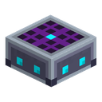

全部内容
116 个页面

发电机
9
风力涡轮机
风力涡轮机 用风产出 EU/FE——不要燃料，不要阳光，只要高度和天气。把它建得高高的——它就会回报丰厚；扔在地上——几乎一无用处。它奖励那些爬上高塔、不惧雷暴的人。
LV
天空风车
天空风车（Sky Mill）是天空分支的第二阶（T2），由 基础风力涡轮机 进化而来。它在露天时用风产出 EU/FE，但基础值随高度增长 快一倍（每阶只需 8 方块而非 16 即到达山脊），并以 12 EU/FE/t 封顶。天气对它的影响比其他风机都要弱（雨 ×1.25、雷暴 ×1.5）——它是稳定收益型风机，而非峰值型。仅能通过 日光进化芯片 让基础风机 进化…
LV
风暴风车
风暴风车（Tempest Mill）是风暴分支的第二阶（T2），由 基础风力涡轮机 进化而来。基础值略高于 T1（步长 16，封顶 6），但 天气倍率被强化：雨 ×2、雷暴 ×3.5，综合封顶 24 EU/FE/t（实际可达峰值 21）。在晴天它弱于天空风车，但在雨雷之下就是一台刺激的"风暴猎手"。仅能通过 月光进化芯片 让基础风机 进化 获得；它没有合成配方。
LV
水车
水车 由流动的水推动而旋转，全天候工作——不管外面是黑夜还是雷暴。它不要燃料，也不需要水箱和抽水泵：在水轮旁制造一股水流，只要水在流，水车就持续产出 EU/FE。
LV
发电机
发电机 烧固体燃料——煤炭、木炭、煤炭块，凡能在原版熔炉中燃烧的——并将其转化为 EU/FE。它是不知疲倦的电源，在没有阳光也没有风时首选：它只管工作，不分昼夜，无视天气。
LV
地热发电机
地热发电机 烧岩浆而不是煤炭。它的功率是普通 发电机 的两倍，且岩浆可由抽水泵供给——意味着不必再手动搬运燃料。它由现成的发电机构成，所以是升级而非首个能源。
LV太阳能板
太阳能板是你最早的能量来源。把它放在露天处，白天会缓缓产出 EU/FE——足够带动你的第一台机器。
LV
日光太阳能板
日光太阳能板 是 基础太阳能板 的进化版本，昼间分支的第二阶。 发电量是基础版的四倍，依旧只在白天露天工作，夜间毫无产出。
LV
月光太阳能板
月光太阳能板（夜间面板）——是 日光太阳能板 的夜间孪生体，夜间分支的第二阶。它在 夜间 露天产出 EU/FE，白天则毫无产出，这样机器在天黑后也不会停摆。
LV
储能装置
4
充电站
充电站 是一块高度只有方块四分之一的扁平板，玩家只需站上去即可。站立的期间，充电站会 同时 为玩家身上所有的可充电装备充电：快捷栏和背包里的工具、左手中的物品，以及 穿戴在身上 的——能量背包、喷气背包、通量织物护甲套装。
LV
能量凝聚器
能量凝聚器是一个方框，里面悬着一颗缓慢旋转的发光球体。它接住本来会白白流失的电力：当发电机产出多于机器所耗， 多余的部分通常凭空消失。凝聚器把它存下来，再把存量化作一件物品交还——能量凝块。
LV
强化储能库
强化储能库 是储能系列的第二级：用途与 储能库 相同，但等级更高一档。它能容纳 100 000 EU/FE，并以 128 EU/FE/刻 收发，而非 32。
MV储能库
储能库 是本模组第一个储能方块：积蓄来自发电机的 EU/FE，再将其输送给机器。正是它让太阳能板白天的发电量能够在夜晚继续为机器供电。
LV
能量传输
8
锡缆
锡缆是本模组最便宜的导线，也是电缆阶梯的第一档。它很 窄（8 EU/FE/刻，相比之下铜为 12），但能量损耗速度只有铜的 3.3 分之一——每格 0.006 份衰减，而铜为 0.02。
LV
绝缘锡缆
绝缘锡缆是用橡胶强化后的 锡缆。它保留锡的窄参数——8 EU/FE/刻 和 8 EU/FE/包——但把衰减减半：从 0.006 降到每格 0.003。这是适用于太阳能农场以及其他长距离小流量场景的最经济导线。
LV铜缆
铜缆 是游戏早期的主力电缆，也是起始电力链的导线：太阳能板 → 储能库 → 矿石粉碎机。它把相邻方块连成一条线路，传输 LV 能量（最高 32 EU/FE/刻）。在长线路上，部分能量会在途中损耗——线路越长、流量越大，损耗越多。衰减是指数级的：任意长度的线路都会从一个正向数据包中至少留下 1…
LV
绝缘铜缆
绝缘铜缆是用橡胶强化后的 铜缆。它保留铜的吞吐量 12 EU/FE/刻 和数据包上限 32 EU/FE，但衰减减半：从 0.02 降到每格 0.01。这是在打通石油-硫磺链路与硫化机之后，用于长线路的主力 LV 导线。
LV
金缆
金缆是电缆阶梯的顶档，也是本模组第一条 MV 等级的导线。它承载 48 EU/FE/刻——是铜的四倍——并把数据包上限抬到 128 EU/FE（对比 LV 的 32）。
MV
绝缘金缆
绝缘金缆是用橡胶强化后的 金缆。它保留金的吞吐量 48 EU/FE/刻 和数据包上限 128 EU/FE，但衰减减半：从 0.03 降到每格 0.015。这是本模组唯一接触安全的 MV 导线，因此在打通石油-硫磺链路与硫化机之后，它是基地内部布线的首选。
MV
琥珀金缆
琥珀金缆 是第一条 HV 等级的导线。HV 等级此前并非空白：自 MOD-091 起 传送站 就运行在 HV 上——它是本模组唯一的 HV 耗电方，此前一直只能用金制（MV）电缆来供电。这条电缆取代了更早的"玻璃纤维 EV 电缆"概念——同样的"最贵也最高效的导线"角色定位，但落在更早、已经就绪的等级上，材料也更贴合本模组：琥珀金 合金（金 + 银，自…
HV
绝缘琥珀金缆
绝缘琥珀金缆是用橡胶强化后的 琥珀金缆。它保留琥珀金的吞吐量 192 EU/FE/刻 和数据包上限 512 EU/FE，但衰减减半：从 0.005 降到每格 0.0025。这是 本模组最低的损耗——只有此前纪录保持者绝缘锡缆（0.003）的一半，是阶梯上前一级裸琥珀金缆的四分之一。
HV
机器
15
铁熔炉
铁熔炉 是一台改进型燃料熔炉，定位介于原版熔炉和 电力熔炉 之间。它比原版更快，能熔炼与原版相同的一切，但仍以固体燃料（煤炭、木板、木炭……）供能，而非 EU/FE。对于尚未搭建能源网络、却想加速熔炼的玩家来说，这是一个早期升级选择。
LV
锯木机
锯木机 是一台用于木材加工的 LV 等级机器。它能将原木（或木板）锯成比手动合成 更高产出 的成品，并可锯出四种不同的产品，拥有 4 种可切换模式（界面中的按钮）：木板 / 木棍 / 半砖 / 楼梯。任何木种都会产出对应木种的成品，木棍则是无木种区分的。这是本模组能耗最低的操作：锯木头比磨石头更轻松。
LV粉碎机
粉碎机 是一台早期矿石翻倍机器。向其中投入矿石或金属，它就会将其研磨成粉，而挖掘到的矿石方块会产出 两份 粉而不是一份，这正是建造它的目的。它是第一台值得为之铺设电缆的机器。
LV
压缩机
压缩机 是一台 LV 等级机器，用于将原材料压缩成更致密的形态：金属粉压成锭、煤炭与宝石粉还原成物品、冰和雪压成更致密的方块、甘蔗压成纸。它的主要作用是为 非金属 闭合矿石翻倍循环：它是唯一一台能将煤炭粉、钻石粉、绿宝石粉和青金石粉还原成可用物品的机器，因此 "矿石 → 2 份粉 → 2 个物品" 的流程对它们也同样有效。
LV
提取机
提取机 是一台 LV 等级机器，用于从原材料中提取有用物质：从花朵提取染料、从南瓜和西瓜提取种子、从烈焰棒提取烈焰粉、从沙砾提取燧石。它几乎总是比原版方式更划算，比如从一朵花中能产出 两份 染料而不是工作台上的一份，因此它是漏斗自动农场的理想节点。
LV
电力熔炉
电力熔炉 是原版熔炉的完整电气对应物。它能熔炼 与普通熔炉相同的一切：矿石、食物、玻璃、圆石，但以 EU/FE 而非燃料供能，并且速度快一倍。在原版配方之上，本模组添加了自己的配方，其中最重要的是 粉 → 锭，这闭合了由 粉碎机 开启的矿石翻倍循环。
LV
合金熔炉
合金熔炉 是本模组第一台将多种不同材料合并为一种新材料的机器。它有三个输入槽，且彼此完全平等：熔炉会整体审视已装入的锭的组合，而不关心哪个锭放在哪个槽里。
LV
电热器
电热器 直接放置在 硫化机 下方，为它提供最高一级的热量——3 级，也就是一份原料产出三份橡胶，而不是在营火上的一份。
LV
聚合机
聚合机 是本模组第一台吞噬的不是物品而是 液体 的机器。其内部有一个可容纳十桶石油的储罐；每次操作恰好多消耗一桶，并产出一块生橡胶。生橡胶随后会在 硫化机 中与硫磺粉结合。
LV
硫化机
硫化机 为石油产线收尾：一份生橡胶与四份硫磺粉合成为橡胶。机器只有在供能 EU/FE 且正下方有热源时才会工作。
LV
电镀槽
电镀槽是一台用于电镀沉积的 LV 等级机器：将纤维与银粉浸入水中并通以电流，银便以导电路径的形式沉积在纤维上。产物是 通量纤维，即通量织物材料的半成品。这是本模组第一台同时消耗物品 和 液体的机器，也是通往 EU/FE 护甲系列的入口。
LV
组装机
组装机 是本模组第一台 MV 等级机器，也是对 64 堆物品手动合成的终结。它会记住工作台配方（记录在 装配蓝图 上），只要有原料和能量就持续不断地生产。无需红石，机器会自行运作。
MV
罐头机
罐头机并不是把食物装进罐子，而是把食物熬成"食物价值"，再倒进一个个完全相同的口粮里。无论你放进 什么，产出的都是同一种物品——也就是说，你所有的存粮都能叠进一组。
LV
部件修理台
部件修理台可以修复磨损的风车转子和 水车轮，而不必重新合成新的。 一次修理会把磨损清零，代价是一个对应等级的材料加上一定的 EU/FE——并且会永久降低这件部件的 最大耐久度，每次降低原始耐久的 20%。
LV
热力离心机
热力离心机是矿石翻倍的第二级。粉碎机已经把一块矿石变成两份粉；离心机再把每份粉一分为二，得到铀屑，铀屑再在压缩机中压制成精炼铀。完整生产线的结果是：一块矿石方块产出四份，而直接熔炼只有一份。
LV
流体机器
2抽水泵
抽水泵——以 EU/FE 为动力的 LV 机器，用于输送流体。它会寻找世界中的任何流体源（从自己前方 的方块开始，沿流动流体继续），或从相邻储罐抽取流体，将其积累到内部 10 桶容量的储罐中， 并自己将其推出去——到任何相邻的接收储罐。储罐接受任何流体（不仅限于熔岩/水），因此也 可以倒入模组流体——通过胶囊或其他模组的容器。
LV
蒸馏塔
蒸馏塔 是一座高三格的塔——本模组最高的机器，也是它的第一个多方块结构。塔由三个相同的塔段上下叠放组装而成。内部有三个储罐：中段灌入原石油，顶部凝结出柴油——轻质目标馏分，底部流下重油——重质残渣。无需任何设置：每座塔的布局都相同，一目了然——“轻的在上，重的在下”。
LV
物品物流
1

流体物流
1

流体储存
1
材料
16
锡矿石
锡是本模组的第一个金属，也是 LV 等级的基础：你的第一批机器所依赖的导线和电路都来自它。矿石出现在石头和深板岩中，位于中等深度，可用任何石镐及以上等级开采。

硫磺矿石
硫磺是早期可开采的非金属，用于橡胶硫化。矿石出现在石头和深板岩中，可用石镐及以上开采，产出粗硫磺。粉碎机把一块矿石或一份粗硫磺变成两份粉；普通熔炉给一份粉，不翻倍。

银矿石
银是本模组稀有且埋藏较深的金属，预留给电子工业：它是制造 MV 等级电路和组件的材料。矿石出现在石头和深板岩中——比锡更深也明显更稀有——可用任何石镐及以上等级开采。

镍矿石
镍是本模组最稀缺、埋藏最深的金属，预留给进入 MV 等级的通道：它将成为 MV 机器外壳和高级电路的合金材料。矿石出现在石头和深板岩中，比银更深也更稀有；可用任何石镐及以上等级开采。
铀矿石
铀是本模组最稀有的金属，预留给核能路线（RTG、反应堆、浓缩）。矿石出现在世界底部，以微小矿脉形式存在，并且与其他矿石不同，它需要铁镐及以上——木镐、金镐和石镐都不会掉落。

钯矿石
钯是本模组第一种、目前也是唯一一种在下界开采的材料。矿石以小矿脉的形式分布在该维度的下层，需要钻石镐才能采集——比只需铁镐的铀高出一个等级。

石油
石油是本模组的第一种液体，也是唯一一种既不能合成、也不能熔炼的资源：只能去寻找。它以湖泊的形式存在于世界中——大多深埋地下，偶尔以斑点的形式露出地表。矿藏是有限的：每被舀起一块石油方块就永久消失，不会像水那样再生。

青铜锭
青铜是本模组四种合金里最便宜、产量最大的一种。它由合金熔炉用铜和锡熔炼得到：这两种金属在建好熔炉时通常已经积攒了不少。

白铜锭
白铜是由铜与镍一比一熔炼得到的合金，由合金熔炉制作。这是四种配方里最简单的一种：每种金属各一个锭，没有任何倍率。

因瓦锭
因瓦是由铁与镍熔炼得到的单件合金，由合金熔炉制作。铁你总是有，而镍是本模组最稀缺的金属，所以因瓦的产量正卡在镍上。

琥珀金锭
琥珀金是由金与银一比一熔炼得到的合金，由合金熔炉制作。从原料角度说，这是熔炉里最昂贵的配方：两种输入金属都很珍贵，都不是仓库里的“多余货”。

回火铁块
回火铁块是一种存储方块：9 个回火铁锭压缩成一个完整的方块。用于节省箱子空间——用一堆方块代替 9 堆锭。

回火铁板方块
回火铁板方块是由 4 块回火铁板 制成的装饰性建筑方块：一块带屏幕和线条的“科技面板”。它让回火铁板有了作为高科技饰面的用途。循环可逆（方块 → 4 板），无损耗。

银板方块
银板方块是由 4 块银板 制成的装饰性建筑方块：一块整洁的 2×2 带螺栓金属贴面。它让银板有了作为饰面材料的用途。循环可逆（方块 → 4 板），无损耗。

柴油
柴油 是石油蒸馏的轻质馏分，也是蒸馏塔的目标产物：每桶原油出 700 mB。它不会在世界中自然出现——唯一来源就是蒸馏塔。金黄色、流动性好；与石油不同，它的行为像水——在世界中不燃烧、不减速、不淹人。

重油
重油 是蒸馏的重质残渣：每桶石油出 200 mB，流入蒸馏塔的底部储罐。粘稠、深棕色；论体积它带来的麻烦更多、论回报却更少——这正是底部馏分该有的样子。和柴油一样，它在世界中表现得像水：不燃烧，无害。

农业
3
棚架
棚架——攀缘植物的支架，也是本模组的第一种农作物。今天上面种的是棉花，是蜘蛛作为 纤维来源的替代品：在农田里种植，而不是从怪物身上打。名字刻意是通用的——支架也为未来的 植物设计。

园艺无人机基站
园艺无人机基站——1×1 的方块底座（如同扫地机器人的基座），无人机会从中升空并巡视基站 周围半径 4 格的区域。无人机不是 Entity，而是由基站本身的 BlockEntityRenderer 绘制的对象 ——视觉上它看起来和移动起来都像飞行器，但物理上始终「属于」基站方块，无法离开其区域。
LV
培育舱
培育舱——1×2 多方块：下方矮型机械底座，上方玻璃穹顶。把任何玻璃（标签 c:glass）放到 底座上——它会变成一个立体腔室，被辐照的物品在内部悬浮旋转。
LV
高级机器
1
实用方块
14铁箱子
铁箱子——一个简单的 36 格（4 行 × 9）物品存储方块：比原版箱子多整整一行。不需要 能量——这是一个「民用」仓库方块，等级在原版铜箱子之上。

银箱子
银箱子——一个简单的 45 格（5 行 × 9）物品存储方块：比铁箱子 （36）整整多出一行。不需要能量——这是一个「民用」仓库方块，是铁箱子之后的下一个等级。

金箱子
金箱子——一个简单的 54 格（6 行 × 9）物品存储方块：比银箱子（45）整整多出一行。 不需要能量——它是仓库用的「民用」方块，是银箱子之后的下一个等级。用金锭作为银箱子的 升级来合成。

琥珀金箱子
琥珀金箱子是一个 81 格（9 行 × 9）的物品存储方块——是金箱子（54）的一倍半。它不需要能量，是箱子系列的最高等级「民用」仓储方块。

存储模块
存储模块——一个 27 格方块，它最擅长的是：与邻居合并。把两个模块紧挨着放——就成了 一个 54 格的一体仓库，共用一个窗口。三个——81。四个——108，这就是上限。

库存显示物品展示框
库存显示物品展示框——挂在任何容器（原版箱子、木桶、潜影盒或模组的铁箱子） 上的展示框，它会实时地直接在框上显示内部有多少物品。不需要能量——它是仓库的便利 设施：一排排箱子上的「价签」，无需打开窗口即可看到存量。
LV
浓缩铀火把
浓缩铀火把——一种装饰性光源：光照等级 14（与原版火把相同），但带有明亮的绿色火焰 和稀有的绿色火花。可以像普通火把一样放在地上或墙上。不需要能量——它是装饰品，而不是 发电机。

工业工作台
工业工作台——模组钢色调的装饰性「带台钳的工作台」实心方块，也是新村民职业 工业师的工作站点（job site）。工作方式与原版的「高炉 → 盔甲匠」组合完全相同：把 工作台放在失业的成年村民旁边——他会走过来，占用工作台并成为一名工业师。
指南书
指南书——Ala Industrial 模组的游戏内教程。新玩家进入世界时面对的是非平凡的机制 （EU/FE 而非 FE、LV/MV/HV 电压等级、带损耗的电缆、机器的端口朝向），在没有内置教程的情况 下只能猜测或阅读外部 wiki。指南书降低了入门门槛：玩家在首次进入世界时自动获得此书…

Player Profile
玩家档案——独立的玩家档案屏幕（MOD-133）。原版统计只能显示「合成了多少把镐」，但看 不到模组中的职业表现——能源网络生产了多少 EU/FE、机器处理了多少矿石。玩家档案收集这些 模组活动并将其转化为职业进度：一套 40 级的精通点数系统，归入 8 个主题称号（从学徒 到传奇）。

Chests/Spawn Bonus Chest
这不是一个方块，而是对原版战利品表 minecraft:chests/spawn_bonus_chest 的修改。 当玩家在创建新世界时开启了「奖励箱」选项，出生点旁出现的箱子里——在标准原版物品池（原木、 木板、苹果、石制工具）之上——会额外加入 Ala Industrial 的起始物品池。目的是让玩家在…

大型生物驱逐器
大型生物驱逐器是守卫力场的最高一级：半径 24 格（49×49×49 的立方体），消耗 64 EU/FE/t。整座基地都在一个穹顶之下——敌对生物走到边界就会掉头。
HV
小型生物驱逐器
小型生物驱逐器是一种守卫方块：只要它接入电网、力场处于开启状态，周围区域内的敌对生物 就会逃离——就像苦力怕躲开猫一样——无法靠近你的基地。被动动物、村民和玩家不受影响； 中立生物（末影人、僵尸猪灵）只有在已经被激怒时才会被驱离。
LV
中型生物驱逐器
中型生物驱逐器是小型生物驱逐器成长后的版本：区域半径翻倍 （16 格），消耗为 32 EU/FE/t。力场规则完全相同——敌对生物逃离，被动生物和未被激怒的 中立生物不受影响。
MV升级配件
2


组件
19
铁粉
材料形态 是一组半成品物品：粉，以及之后的板、坯料和导线，是机器和配方把矿石和锭变成的东西。在第一阶段，你只会接触到 粉：它由 粉碎机 产出，也正是它带来了“矿石翻倍”（矿石方块或粗矿 → 2 份粉 → 2 个锭）。

回火铁
回火铁 是把一个原版铁锭熔炼后得到的锭。配方严格是 1:1 的，但产出已经是另一种材料——“回火”过的铁，由它可以做出比铁稍好的物品。

铁齿轮
金属齿轮 是一组合成组件：石齿轮、铁齿轮、金齿轮和银齿轮。四种齿轮都由同一种坯料——木齿轮——加上十字形排列的本等级材料压制而成。它们都是物品，而非方块：只作为原料存在。
电子电路
电子电路 是模组的基础合成组件，几乎所有早期（LV）机器和储能方块的“大脑”。它是一个物品，而非方块：只作为原料出现在机器的配方中。

机器外壳
机器外壳 是用于组装机器的基础方块。它由 8 块铁 板（工作台上的边框）锻造而成，随后成为 LV 机器的本体：机器的配方就是“外壳 + 专用零件”。由此串起一条清晰的链路：锭 → 板 → 外壳 → 机器。

铜线圈
铜线圈 是一种合成组件：把铜缆绕在锡芯上制成的线圈。它是一个物品，而非方块——只作为原料出现在配方中。第一次用到它的是 电钻，其配方最下面一排放两只线圈。

电池
电池 是模组中的第一种能量载体：一个容量为 2 000 EU/FE 的小型蓄电池，可以充电、放电、整摞带在身上。它同时也是合成组件：能量背包（能量背包）、电钻、喷气背包、通量织物护甲 等电气物品都由电池组装而成。
LV
水轮
水车轮是一种合成组件：安装在水车轮槽中的轮子。轮槽为空时，水车不产生任何能量。 轮子是带耐久度的消耗品（MOD-189，与风车转子相同）：仅在水车实际产出 EU/FE 时磨损（与产量成正比），耐久耗尽即损毁。 耐久条在背包和槽位中均可见。

木质转子
风车转子是一种合成组件：安装在任意风车（T1 基础型、T2 高空/风暴型）转子槽中的叶片。转子槽为空时，风车不产生任何能量。 转子是带耐久度的消耗品（MOD-189）：仅在风车实际产出 EU/FE 时磨损（与产量成正比，雨天/雷暴时更快），耐久耗尽即损毁。 耐久条在背包和风车槽位中均可见。

电网分析仪
电网分析仪 是一件手持诊断工具，对于没有操作员权限的玩家而言，它是 /ala net 命令的友好替代。它不生产也不储存能量——只显示网络里发生了什么。
空白芯片
空白芯片 是一种合成组件，是搭建功能性升级芯片所用的坯料。它是一个物品，而非方块。它本身什么也不做，也 不能 放进机器的升级槽（升级槽会拒绝它）。它唯一的角色是共同的起点，由它组装出真正的芯片；其中的第一种是 静音芯片。

日光进化芯片
进化芯片 是一种合成组件，可以把基础的 T1 形态变为 T2。有两种：

橡胶
橡胶 是石油链路的最终产物：
LV
高级电路
高级电路 是 电子电路 的第二阶段，也是第一个让人必须把石油链路走到底的零件。它是一个物品，而非方块：只作为 MV 等级配方的原料出现。
MV
高级机器外壳
高级机器外壳 与 机器外壳 是一回事，只是高出一个等级：用于组装中压（MV）等级的机器。它由普通外壳组装而来，上下覆有 6 块 回火铁板，两侧各装 2 块 高级电路（MOD-299）。
MV
复制芯片
变异芯片是三种物品，用来在孵化器的各个工作模式之间切换。 芯片放进它专属的槽位；槽位为空意味着机器根本不会启动——它不会自己挑选模式。

共鸣碎片
变异产物是这样一类材料：任何箱子里没有，任何矿石里没有，任何合成表里也没有—— 只有孵化器才会产出。它们分为两组。

能量凝块 I
能量凝块是能量凝聚器把电网盈余变成的东西： 那些本来会白白消失的能量。凝块共三个等级——I、II、III；它们是三种不同的物品， 而不是同一种物品的堆叠。

通量织物
通量丝线与通量织物是同一种材料的两个阶段，也是通往 通量织物护甲的唯一道路。链条很短，而且是单向的：

游戏物品
20
锻造锤
锻造锤是早期阶段的手动工具，在出现机器自动化之前，用它来制作金属板。把锤子和锭放到工作台上——就能得到该金属的板。锤子在此过程中不作为材料被消耗：它留在合成网格中，每出一块板消耗 1 点耐久。这是有意设计的"手工费力"路线：从第一块铁起就能手工锻造板，但每块都要付锤子磨损，直到你建成压缩机，开始用电力量产。

扳手
扳手不会被消耗，能做两件事：配置物品管道的各面朝向，以及拆解本模组的方块。

淬火铁镐
淬火铁镐是 Ala Industrial 模组的第一件手持工具。在工作台上用本模组的回火铁按普通镐的形状合成。

Tempered Iron Tools
淬火铁工具是 Ala Industrial 模组的一套共五件手持工具：镐、斧、锄、铲和剑。每一件都按自己的原版对应物合成，但用本模组的回火铁代替铁锭。

Tempered Iron Chestplate
回火铁护甲是一套共四件的完整套装：头盔、胸甲、护腿和靴子。每件都比对应的铁制件更结实，并用回火铁修复（通过标签 tempered_iron_armor_materials）。防护略高于铁、低于钻石——介于游戏早期与后期之间。

Scythe
大镰刀是用于快速清理装饰性植被和收割作物的手动工具。右键点击方块会收割前方平面区域内的所有合适植被——树叶、草、花、蕨、蘑菇、藤蔓、垂根、树苗——并掉落普通掉落物，就像你徒手破坏每个方块那样。按住 Shift 把大镰刀变为 AOE 镰刀：同一挥动下只采集已成熟的作物（小麦、胡萝卜、马铃薯、甜菜根、浆果、仙人掌、甘蔗），而装饰物和未成熟幼苗则原封不动。

电池储物袋
电池储物袋是本模组第一个电力物品：一件便携式收纳容器，运作方式类似原版收纳袋，但容量翻倍且需要电量。它只占用物品栏一个槽位，却能装下 128 重量的物品（约两组普通方块）——在长途远行或物品栏吃紧时格外好用。
LV
真空胶囊
真空胶囊是可堆叠的液体容器。它解决了原版桶的痛点：桶不可堆叠，一只桶占一个槽，携带大量液体非常不便。

电钻
电钻是本模组第一件手持电动工具：一把用 EU/FE 代替耐久的钻石镐。只要电量够支撑当前方块，电钻挖掘速度就略快于钻石镐（速度 8.5 对 8.0，钻石采集等级），每个成功破坏的方块消耗 50 EU/FE。满电量为 10 000 EU/FE，约可挖 200 个方块。
LV
电动铲
电动铲是本模组第三件手持电动工具，是电钻（石头）和电动链锯（木材）之后的泥土担当。用 EU/FE 代替耐久：只要电量够支撑当前方块，铲子挖掘 #minecraft:mineable/shovel 的速度就快于钻石铲（速度 9.0 对 8.0），每个成功破坏的方块消耗 20 EU/FE。满电量为 10 000 EU/FE，约可挖 500 个方块。
LV
电动链锯
电动链锯是本模组第二件手持电动工具，也是电钻在木材上的镜像：一把用 EU/FE 代替耐久的斧子。只要电量够支撑当前方块，链锯砍伐 #minecraft:mineable/axe 的速度就快于钻石斧（速度 9.0 对 8.0），每个成功破坏的方块消耗 30 EU/FE。满电量为 10 000 EU/FE，约可砍伐 333 个方块。
LV
电动锄
电动锄是本系列第四件也是最后一件手持电动工具：在电钻（石头）、链锯（木材）和铲（泥土）之后，它负责农田。契约相同：用 EU/FE 代替耐久，不会损坏，没电时仍以徒手速度工作并完整保留掉落。
LV
电磁铁
电磁铁是一件可充 EU/FE 的便利物品：放在物品栏的任何槽位（快捷栏 / 主物品栏 / 副手）都会自动把附近掉落的物品吸引到玩家身边——无论是矿洞里的矿石掉落、爆炸后的碎块，还是别的玩家遗弃的物品。它是 tier 1：球形范围 5 格（上/下/四周都算）；每件真正被吸动的物品消耗 2 EU/FE。当附近什么也没有时，空扫描不花一分电。
LV
能量背包
能量背包是一件可穿戴的能量缓存：穿在胸甲槽里，只要你戴着它，它就每秒给物品栏中所有电力物品补一次电。目前唯一的此类物品是电池储物袋：背着背包，储物袋就不会在远征中途没电锁住。
LV
喷气背包
喷气背包是一件用于飞行的可穿戴 EU/FE 物品：占用胸甲槽（替代护甲），自带 30 000 EU/FE 缓存。在空中按住跳跃键——引擎向上推力并消耗 50 EU/FE/刻：满电量约可维持 ~30…
LV
通量织物胸甲
通量织物护甲是本模组第一套完整的 EU/FE 护甲套装，也是纤维 → 通量纤维 → 通量织物链条的终点。它不是肉盾型装备，而是实用型套装：防护与铁同级，玩家为的是一组在有电时启用的加成。
LV
风速计
风速计是一件不需要能量的手持仪器。它不建造、不生产任何东西：它显示你所站位置的风速——以便在风力涡轮机建造之前就选好塔的高度，而不是把塔拆了重搭三次。

传送遥控器
传送遥控器是一件手持信标物品：通过 Shift+右键与传送器站点绑定，随后可触发玩家向站点的跳跃。遥控器本身不存 EU/FE——跳跃所需的能量从已充电的目标站点扣除。
LV
灵魂容器
灵魂容器是一只镶在银框里的玻璃瓶，瓶底铺着灵魂沙。只要容器待在你的物品栏里，每一只 由你亲手击杀的敌对生物——用你的拳头、你的剑、你的箭——都会把灵魂交给它。宠物、陷阱 和他人造成的击杀不计入。

电动军刀
电动军刀是电力装备系列第五件物品，也是该系列的第一件武器：在电钻（石头）、链锯（木材）、铲（泥土）和锄（农田）之后，轮到战斗。系列契约不变：用 EU/FE 代替耐久，不会损坏，没电时不关闭而是降级。
LV